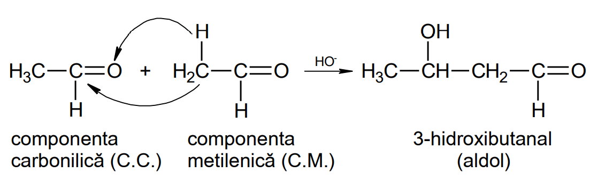

Compuși carbonilici
Definiție: Compușii carbonilici sunt compuși organici, care conțin în moleculă grupa funcțională carbonil (>C=O) .
Compușii carbonilici sunt de două feluri: ALDEHIDE și CETONE.
Formula generală pentru compușii carbonilici cu catene saturate aciclice este: CnH2nO.
Clasificare si nomenclatură
- După natura radicalului / radicalilor, compușii carbonilici pot fi:
- alifatici saturați: CH3 – CH2 – CH2 – CHO butanal (aldehidă butirică)
- alifatici nesaturați:
- aromatici:
- alifatici saturați: CH3 – CH2 – CH2 – CHO butanal (aldehidă butirică)
- după numărul grupelor carbonil, pot fi:
- monocarbonilici: conțin o singură grupă carbonil de tip aldehidă sau cetonă;
- di- sau policarbonilici : conțin două sau mai multe grupe carbonil:

Observație: Grupa carbonil are prioritate la numerotarea catenei față de grupele funcționale învățate (halogeni, nitro, alcool, fenol, amino), față de radicalii hidrocarbonați, legăturile duble sau triple.
Izomerie – compușii carbonilici pot da izomerie de catenă, de funcțiune, geometrică și optică.
Proprietăți fizice
La temperatură obișnuită, aldehida formică este gazoasă, ceilalți compuși carbonilici inferiori sunt lichizi iar cei superiori sunt solizi. Punctele de fierbere și de topire cresc cu masa moleculară și sunt mai mari decât ale alcanilor corespunzători (datorită masei și polarității moleculei).
Între moleculele compușilor carbonilici apar forțe van der Waals (legături dipol-dipol și forțe de dispersie) și de aceea punctele de fierbere sunt mai mici decât ale alcoolilor și acizilor carboxilici cu același număr de atomi de carbon, ale căror molecule sunt asociate prin legături de hidrogen, mult mai puternice decât forțele van der Waals.
Termenii inferiori sunt solubili în apă, deoarece între molecule compușilor carbonilici și apă se stabilesc legături de hidrogen. Solubilitatea compușilor carbonilici în apă scade cu creșterea masei moleculare (cu creșterea catenei, a radicalului hidrocarbonat, care este hidrofob). Primii trei termeni (aldehida formică, aldehida acetică și acetona) sunt miscibili cu apa.
Compușii carbonilici sunt solubili în solvenți organici, iar cei lichizi sunt buni solvenți pentru lacuri și vopsele.
Compușii carbonilici au mirosuri specifice, uneori plăcute alteori dezagreabile. Aldehida acetică are miros de mere verzi, aldehida benzoică de migdale amare, iar aldehida formică are un miros asemănător formolului (soluție de aldehidă formică 40%).
Proprietăți chimice
- Reacția de condensare
Reacția în care două substanțe organice se combină într-o moleculă mai mare, urmată adesea de eliminarea unor molecule mai mici, reprezintă o reacție de condensare- condensarea aldolică și crotonică
Reacția are loc între doi compuși carbonilici, cu eliminarea unei molecule de apă. Procesul decurge în două etape:- adiția aldolică
Unul dintre compușii carbonilici participă la reacție cu grupa carbonil și se numește componentă carbonilică, iar celalalt compus carbonilic participă cu atomul de carbon vecin grupei carbonil CH, CH2 sau CH3 (acești atomi de hidrogen au reactivitate mai mare) și se numește componentă metilenică. Componenta metilenică se adiționează la grupa carbonil a componentei carbonilice.
Aldolii au două grupe funcționale. O grupă funcțională de tip aldehidă și una de tip alcool (hidroxialdehidă), iar cetolii o grupă funcțională de tip cetonă și una de tip alcool (hidroxicetonă).Reacția de adiție poate avea loc între:- două aldehide identice
 - două cetone identice
- o aldehidă și o cetonă sau două aldehide diferite sau două cetone diferite
Dacă la reacție participă doi compuși carbonilici diferiți, se formează (teoretic) amestecul a patru produși de reacție. Totuși în cazul în care avem o aldehidă și o cetonă, se obțin în cantitate mai mare produșii în care aldehida a fost componentă carbonilică, deoarece aldehidele au o reactivitate mai mare.
Observație: aldehidele și cetonele care nu conțin hidrogen la atomul de carbon din poziția α față de grupa carbonil pot fi numai componente carbonilice (nu pot fi componente metilenice), de ex. formaldehida, benzaldehida.
- două aldehide identice
- deshidratarea aldolului (reacția de crotonizare)
Reacția de crotonizare constă în deshidratarea aldolului sau cetolului cu formarea unui compus α-β-nesaturat, prin eliminarea unei molecule de apă între grupa hidroxil (nou formată prin adiția aldolică) și un atom de hidrogen din poziția vecină grupei carbonil (poziția α).
- adiția aldolică
- condensarea aldolică și crotonică
- condensarea aldehidei formice cu fenolul
Revezi obținerea novolacului și a bachelitei învățate la fenoli.
- Reacții de oxidare ale aldehidelor
Aldehidele se oxidează ușor la acizi carboxilici în comparație cu cetonele. Deci aldehidele au caracter reducător (față de cetone care nu au). Aldehidele pot fi oxidate cu:- soluție de permanganat de potasiu și acid sulfuric:
- soluție de bicromat de potasiu și acid sulfuric:
- reactiv Tollens – soluție de hidroxid de diaminoargint (I)
- cu reactiv Fehling:
Reacții de recunoaștere a compușilor carbonilici
Pentru recunoașterea compușilor carbonilici se folosesc reacțiile chimice specifice acestor compuși, care au loc cu schimbări de culoare sau cu formarea unor precipitate ușor de identificat:
- Reacția cu reactivul Tollens
Aldehidele pot fi recunoscute cu reactivul Tollens. Se formează oglinda de argint (dacă eprubeta este ușor încălzită și ținută cât mai nemișcată) sau precipitatul negru de argint. Cetonele nu dau reacția cu reactivul Tollens. (vezi mai sus reacția de oxidare a aldehidelor cu reactiv Tollens). -
Reacția cu reactivul Fehling
Aldehidele pot fi recunoscute cu reactivul Fehling. La încălzire se formează precipitatul roșu de oxid cupros (Cu2O). Cetonele nu dau această reacție. (vezi mai sus reacția de oxidare a aldehidelor cu reactiv Fehling).